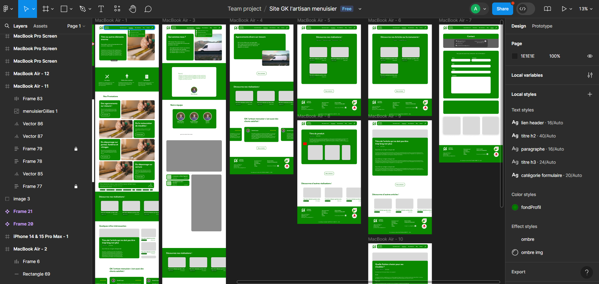

Site | GK L'Artisan Menuisier 2024
Description
J'ai fait un stage de 2 mois dans l'entreprise de menuiserie, GK L'Artisan Menuisier. J'ai pu y faire un site complet de la réflexion sur les fonctionnalités et le design sur Figma, au code en HTML, CSS, Javascript, PHP et SQL, en passant par la base de données, la mise en ligne et le référencement. J'ai tout mis en oeuvre pour que le site gklartisanmenuisier.fr soit le plus optimisé possible avec les notes de performance le plus proche de 100 et les notes d'accessibilité, de SEO et de bonnes pratiques à 100. J'ai implémenté des fonctionnalités de blog et de réalisations qui sont gérer grâce à une interface administrateur.
J'ai commencé par définir les besoins de l'entreprise en discutant avec le patron. J'ai ensuite organisé l'arborescence du site et créé le design sur Figma. Une de mes préoccupations principales était l'accessibilité, avec notamment un bon contraste des couleurs. J’ai ensuite commencé à coder le site en HTML, en Css et en Javascript, en ajoutant des interactions telles que des changements de couleurs lorsque l’on passe la souris par-dessus un bouton. J'ai fait très attention au responsive, aux bonnes pratiques, au référencement naturel (SEO) et aux performances, notamment au niveau des images.

Pour gérer le blog, les commentaires et les réalisations, j'ai créé une interface administrateur. Elle permet d'ajouter un élément ou de le modifier ou supprimer. Il me fallait donc une base de données, j’ai alors fait un MCD (Modèle Conceptuel de Données), puis le MLD (Modèle Logique de Données) et créé la base de données sur PhpMyAdmin vis à Laragon.
Un élément important de l'interface administrateur est la gestion des images. Pour une meilleure expérience utilisateur, on peut glisser et déposser les images qui vont s'afficher directement à l'écran. De plus, on peut mettre une image de n'importe quelle taille qui est compressée automatiquement par la suite. Poour les articles on peut ajouter autant de sous-titres et de paragraphe que l'on veut.
Un élément important de l'interface administrateur est la gestion des images. Pour une meilleure expérience utilisateur, on peut glisser et déposser les images qui vont s'afficher directement à l'écran. De plus, on peut mettre une image de n'importe quelle taille qui est compressée automatiquement par la suite. Poour les articles on peut ajouter autant de sous-titres et de paragraphe que l'on veut.
Au niveaux de la sécurité, j'ai mis en place plusieurs action. J'ai mis au niveau du formulaire de contacte et de connexion pour l'administrateur un captcha anti robots pour éviter les spams. Pour la connexion admin le temps se ralonge entre chaque tentative et le mots de passe est scripté dans la base de données.
Le site est hébergé avec OVH en https. Pour le référencement, j'ai optimisé le site web, écrit une métadescription, j'ai créé un script qui génère un fichier site map régulièrement pour prendre en compte les nouvelles pages de blogues et de réalisations. J'ai aussi mis le lien sur la page Google My Business et demandé le référencement du site sur Google Search Console.
Outils utilisés pour ce projet
Visual Studio Code
Laragon
Github